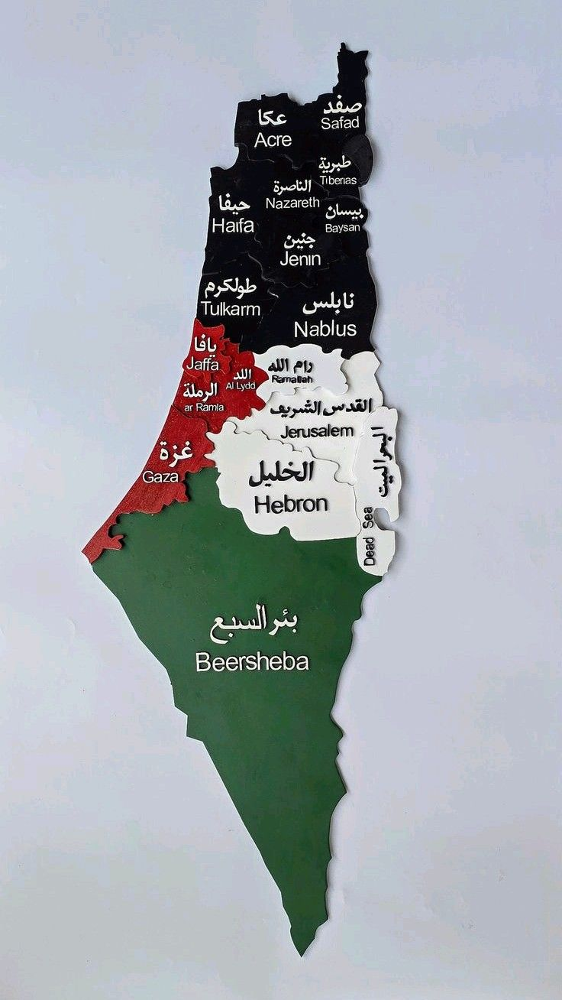
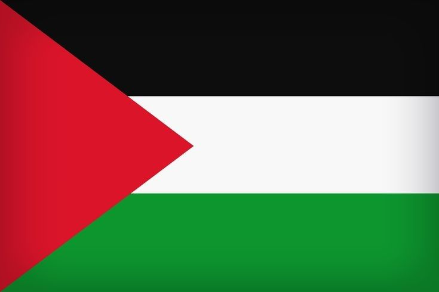

Palestine has a rich and ancient history that spans millennia, home to many peoples including the Canaanites and the Philistines. Its cities and lands have long been crossroads of culture, religion, and trade.
During the Roman and Byzantine periods the region was an important religious and administrative center. In the 7th century it became part of the Islamic Caliphates, initiating centuries of cultural and intellectual development under successive Arab and Islamic dynasties.
In the modern era many Palestinians describe the 20th century as the Nakba, a time of mass displacement and loss. From this viewpoint, the subsequent settlement and state-building by Zionist forces are seen as a form of colonial occupation imposed on historic Palestine, resulting in ongoing dispossession and struggle. The Palestinian people continue to assert their rights to their land, identity, and self-determination.